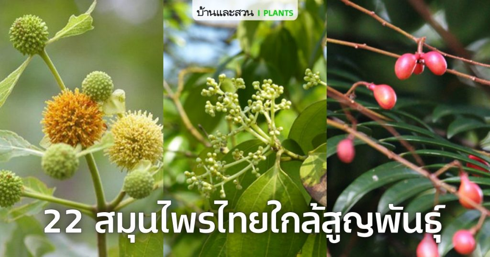
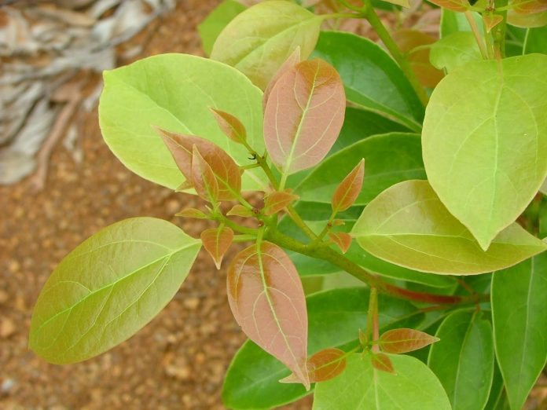
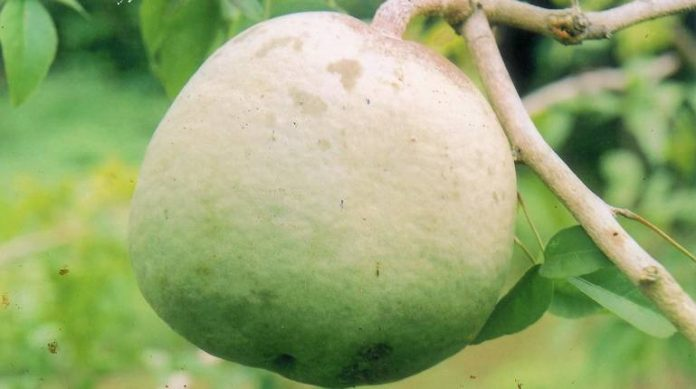
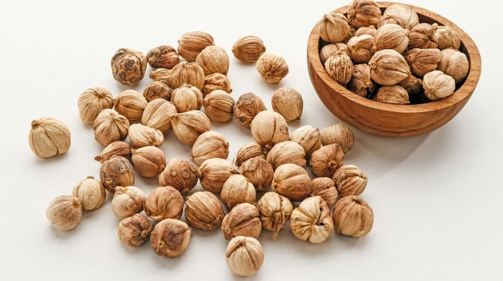

สมุนไพรไทย 22 ชนิดเสี่ยงสูญพันธ์
สมุนไพรไทย 22 ชนิดเสี่ยงสูญพันธ์

นายนันทศักดิ์ โชติชนะเดชาวงศ์ ผู้อำนวยการกองคุ้มครองภูมิปัญญาการแพทย์แผนไทยและพื้นบ้านไทยกระทรวงสาธารณสุข กรมพัฒนาการแพทย์แผนไทยและการแพทย์ทางเลือก
กระทรวงสาธารณสุข(สธ.) ประกาศรายชื่อ “สมุนไพรไทย 22 ชนิดที่เสี่ยงสูญพันธุ์" เหตุเพราะโตช้า จะใช้รักษาต้องใช้ทั้งต้น หรือทั้งราก หรือต้องใช้บ่อยจึงรักษาได้ ประกอบด้วย
| 1. ถั่วดินโคก |
2. เทพทาโร |
| 3. มะตูมนิ่ม |
4. มะหาด |
| 5. เร่ว |
6. หัวร้อยรู |
| 7. กระทุ่มนา |
8. ขันทองพยาบาท |
| 9. จุกโรหินี |
10. ชะเอมไทย |
| 11. ชิงชี่ |
12. ตับเต่า |
| 13. นางแย้มป่า |
14. ปลาไหลเผือก |
| 15. พังคี |
16. มะคังแดง |
| 17. สะค้าน |
18. สารภีป่า |
| 19. อบเชยไทย |
20. เฉียงพร้านางแอ |
| 21. เถาเอ็นอ่อน |
22. เปราะหอม |
ในแต่ละจังหวัดจะมีการจดทะเบียนรายชื่อสมุนไพรที่มีอยู่ในจังหวัดนั้นๆ โดยแบ่งออกเป็น 3 ประเภท คือ 1. สมุนไพรเพื่อการศึกษา 2. สมุนไพรพืชเศรษฐกิจ และ 3. สมุนไพรเสี่ยงสูญพันธุ์
มีคณะผู้เชี่ยวชาญเข้ามาจัดทำข้อมูลของสมุนไพรทั้ง 3 ประเภท หลังจากนั้นคณะกรรมการคุ้มครองและส่งเสริมภูมิปัญญาการแพทย์แผนไทยได้ประชุมหารือกัน โดยเลือกสมุนไพรมา 6 ชนิดจาก 22 ชนิด
เเละได้เสนอสมุนไพร “กระวาน” เพิ่มอีกชนิด โดยหากใครมีสมุนไพรทั้ง 7 ชนิดอยู่ในครอบครองไม่ได้ถือว่ามีความผิด แต่ต้องแจ้งมาทางสธ.ให้รับทราบว่ามีอยู่เท่าใด เพื่อที่จะจัดทำแผนส่งเสริมการปลูกต่อไป
สมุนไพรที่ถูกประกาศคุ้มครองและควบคุม 7 ชนิด
 |
 |
 |
 |
| 1. ถั่วดินโคก |
2. เทพทาโร |
3. มะตูมนิ่ม |
4. มะหาด |
 |
 |
 |
| 5. เร่ว |
6. หัวร้อยรู |
7. กระวาน |
| เว็บไซต์อ้างอิงข้อมูล |
เว็บไซต์อ้างอิงรูปภาพ |
| https://mgronline.com/qol/detail/9600000005955? |
https://www.baanlaesuan.com/49504/plant-scoop/herb-2 |
| https://www.sgethai.com/wp-content/uploads/2022/03/6-5.jpg |